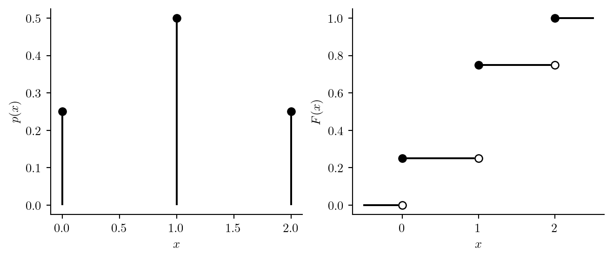

The probability distribution of a discrete random variable is an assignment of probabilities to the possible values the random variable can take. Next is a formal definition.
Definition 8.1 (Probability distribution of a discrete random variable) A probability distribution for a discrete random variable \(X\) with support \(\mathcal{X}= \{x_1,x_2,\dots \}\) is an assignment of probabilities \(p_1,p_2,\dots\), to the values \(x_1,x_2,\dots\) such that
\(0 \leq p_i \leq 1\) for each \(i=1,2,\dots\), and
\(p_1+p_2 + \dots = 1\).
So each probability \(p_i\) must be between zero and one and these must sum to one. If the support \(\mathcal{X}\) of \(X\) is finite (has a finite number of elements), then we can tabulate the probability distribution of \(X\) as in the following examples.
Example 8.1 (Flipping two coins) Flip two coins and define \(X\) as the number of heads. The experiment has sample space \(S = \{HH,HT,TH,TT\}\) and \(X\) has support \(\mathcal{X}= \{0,1,2\}\). Denoting by \(x_1 = 0\), \(x_2 = 1\), and \(x_3 = 2\) the values in the support \(\mathcal{X}\), the assignment of the probabilities \(p_1 = 1/4\), \(p_2=1/2\), and \(p_3 = 1/4\) to \(x_1\), \(x_2\), and \(x_3\), respectively, defines a probability distribution for \(X\). We may tabulate the probability distribution as \[
\begin{array}{c|cccc}
x & 0 & 1 & 2 \\ \hline
P(X = x) & 1/4 & 1/2 & 1/4
\end{array}.
\]
We often use a lower case \(x\) to denote a specific realized value of the random variable \(X\). So the capital \(X\) represents the as-yet-unobserved random variable, and \(x\) simply represents a number. The table above tells us, for each possible value \(x\) of \(X\), the probability that \(X\) will assume that value. Note that the probabilities in the table sum to one.
Example 8.2 (In-state or out-of-state) Select a USC undergraduate student at random and let \(X\) equal \(1\) or \(0\) according to whether he or she comes from South Carolina or not. If the proportion of the undergraduate students at USC coming from South Carolina is \(0.60\), then the probability distribution of \(X\) is \[
\begin{array}{c|cccc}
x & 0 \text{ (out-of-state)} & 1 \text{ (in-state)} \\ \hline
P(X = x) & 0.40 & 0.60
\end{array}.
\] So \(X\) takes the values \(x_1 = 0\) and \(x_2 = 1\) with the probabilities \(p_1=0.40\) and \(p_2=0.60\), respectively. Note that \(p_1 + p_2 = 1\).
We find that we cannot tabulate the probability distribution of a continuous random variable, as we cannot list, or begin to list the values a continuous random variable may take. We will discuss how to define probability distributions of continuous random variables later on.
We can use the probability distribution of a random variable \(X\) to obtain probabilities of the form \(P(X \in A)\), where \(A\) is a set of real numbers.
Exercise 8.1 (Sum of two dice rolls) Roll two dice and let \(X\) be the sum of the rolls.
Next we define a quantity called the expected value of a random variable. This value can be thought of as the mean value of a random variable, or the average one would expect if one observed many values of the random variable.
8.2 Expected value
To understand what is meant by the expected value of a random variable, we need to imagine repeating our statistical experiment over and over again. Imagine repeating a statistical experiment over and over again and then taking the mean of all the \(X\) values we have observed. The expected value of \(X\) is the value which we believe the mean of all the outcomes will approach as we repeat the experiment more and more times.
For example, suppose we flip a coin and let \(X=1\) if heads comes up and \(X=0\) if tails comes up. Then we would expect the sequence of \(X\) values to look something like \[
0 1 0 0 1 1 0 1 1 1 1 0 0 1 0 0 1 1 1 0 1 1 0 1 0 1 1 1 1 1 0 0 1 0 1 1 0 0 1 0 \dots
\]
Now, if we took the mean of all the \(X\) values so far observed, we would get something close to \(0.5\). The mean of the above sequence is \(23/40 = 0.575\). If we were to continue flipping the coin indefinitely, we expect that the mean of the ones and zeroes would eventually “converge” to \(0.5\), that is, it would continue getting closer and closer to \(0.5\). So we say that the expected value of the random variable \(X\) is \(0.5\).
One may object, saying that the “expected value” of \(X\) cannot be equal to \(0.5\), because \(X\) can only be equal to \(0\) or \(1\), but when we say expected value, we are referring to a mean value, which may lie outside the support of \(X\).
Definition 8.2 (Expected value of a discrete random variable) The expected value of a discrete random variable \(X\) with support \(\mathcal{X}= \{x_1,x_2,\dots\}\) and probability distribution assigning \(p_1,p_2,\dots\) to \(x_1,x_2,\dots\), respectively, is given by \[
\mathbb{E}X = x_1 p_1 + x_2 p_2 + \dots
\]
We often use the Greek letter \(\mu\) to denote the expected value of a random variable and often refer to the expected value of a random variable as its mean.
Example 8.3 (Expected value of coin flip random variable) Suppose we flip a coin and let \(X=1\) if heads comes up and \(X=0\) if tails comes up. Then \(X\) has expected value \[
\mu = \mathbb{E}(X) = 0 (1/2) + 1 (1/2) = 1/2.
\]
Example 8.4 (Expected value of die roll) Suppose we roll a die and let \(X\) be the roll. Then \(X\) has expected value \[
\mu = 1(1/6) + 2(1/6) + 3(1/6) + 4(1/6) + 5(1/6) + 6(1/6) = 21/6 = 3.5.
\]
We may think of the expected value of a random variable \(X\) as the balancing point of all possible values of \(X\) when they are weighted by their probabilities of occurrence. If they were sitting on a seesaw, where would the fulcrum need to be placed in order to balance them?
Exercise 8.2 (Shoot a freethrow) Shoot a freethrow and let \(X=1\) if you make a basket and \(X=0\) if you miss. If your probability of making a basket is \(0.7\), what is the expected value of \(X\)? 4
We next introduce the variance of a random variable. This describes how spread out realizations of the random variable are expected to be. If a random variable tends to take values very close to its expected value, it will have small variance; if it tends to take values far away from its expected value, it will have a large variance.
8.3 Variance
The variance of a random variable \(X\) with mean \(\mu\) is the expected squared distance of \(X\) from \(\mu\).
Definition 8.3 (Variance of a random variable) The variance of a random variable \(X\) with mean \(\mu\) is defined as \[
\operatorname{Var}X = \mathbb{E}(X - \mu)^2.
\]
We often use the notation \(\sigma^2\) to denote the variance of a random variable. We will find that this definition of the variance is the same for both discrete and continuous random variables.
Next we describe how to compute the variance of a discrete random variable.
Proposition 8.1 (Variance of a discrete random variable) The variance of a discrete random variable \(X\) with mean \(\mu\) and support \(\mathcal{X}= \{x_1,x_2,\dots\}\) and probability distribution assigning \(p_1,p_2,\dots\) to \(x_1,x_2,\dots\), is given by \[
\operatorname{Var}X = p_1 (x_1 - \mu)^2 + p_2(x_2 - \mu)^2 + p_3 (x_3 - \mu)^2 + \dots
\]
Here are two examples of computing the variance:
Example 8.5 (Coin flip random variable) Suppose we flip a coin and set \(X=1\) if heads comes up and \(X=0\) if tails comes up. Then \[
\begin{align*}
\operatorname{Var}X &= (1/2)(0 - 1/2)^2 + (1/2)(1-1/2)^2 \\
&= (1/2)(1/4) + (1/2)(1/4) \\
&= 1/4.
\end{align*}
\]
Exercise 8.3 (Variance of die roll) Suppose we roll a die and let \(X\) be the number rolled. Give \(\operatorname{Var}X\). 5
8.4 Probability mass function
In many cases it is inconvenient to fully tabulate the probability distribution of a random variable. In the following example the support of the random variable is not a finite set of numbers, so one cannot list all the values the random variable can take.
Example 8.6 (Number of bird landings at a feeder) Count the number of bird landings on a bird feeder on a given day and let this be \(X\). We might use some kind of mathematical model to begin tabulating the probability distribution as \[
\begin{array}{c|ccccc}
x & 0 & 1 & 2 & 3 & \cdots \\ \hline
P(X = x) & 0.02 & 0.07 & 0.15 & 0.20 & \cdots
\end{array},
\] but the table may go on and on so that it is impractical or impossible to write the whole table. In this situation we can truncate the table as below, using the fact that the probabilities must sum to one: \[
\begin{array}{c|ccccc}
x & 0 & 1 & 2 & 3 & \geq 4 \\ \hline
P(X = x) & 0.02 & 0.07 & 0.15 & 0.20 & 0.56
\end{array}.
\]
One might well ask where the probabilities in the bird landings example came from. Recall that a probability distribution for a discrete random variable \(X\) assigns probabilities \(p_1,p_2,\dots\) to the values \(x_1,x_2,\dots\) in the support of \(X\). In the bird landing example, the support of \(X\) is the set \(\mathcal{X}= \{0,1,2,\dots\}\). Depending on the statistical experiment, it may be reasonable to define the probabilities \(p_1,p_2,\dots\) according to a function. In fact, the numbers in the table were obtained by setting \(p_i = p(x_i)\), where \(p(x)\) is the function given by \[
p(x) = \frac{2^{x}e^{-2}}{x!} \quad x = 0,1,2,\dots
\] If you plug in the values \(0,1,2,\dots\) for \(x\), you obtain the values in the table (after rounding to the hundredths place). Such a function according to which the probability distribution of a discrete random variable is defined is called a probability mass function. Formally:
Definition 8.4 (Probability mass function) The probability mass function (PMF) of a discrete random variable \(X\) with support \(\mathcal{X}\) is the function \(p\) which satisfies \[
P(X = x) = p(x)
\] for all \(x \in \mathcal{X}\).
We will encounter several examples of probability mass functions in coming pages.
8.5 Cumulative distribution function
We are sometimes interested in tabulating the distribution of a random variable \(X\) in terms of the values of \(P(X \leq x)\) instead of (or in addition to) \(P(X = x)\) for all the values \(x\) in \(\mathcal{X}\). The probabilities \(P(X \leq x)\) are called cumulative probabilities. Consider the following two examples:
Example 8.7 (Roll a die) Roll one die and let \(X\) be the number rolled. Then we can tabulate the distribution of \(X\) as \[
\begin{array}{c|cccccc}
x & 1 & 2 & 3 & 4 & 5 & 6 \\ \hline
P(X = x) & 1/6 & 1/6 & 1/6 & 1/6 & 1/6 & 1/6 \\
P(X \leq x) & 1/6 & 2/6 & 3/6 & 4/6 & 5/6 & 6/6
\end{array}.
\] The probabilities \(P(X \leq x)\) for \(x = 1,\dots,6\) are the cumulative probabilities. Note that we can compute either row of the table using the other row; we can get the probabilities \(P(X = x)\), \(x = 1,\dots,6\) from the cumulative probabilities by taking differences; for example, we have \[
P(X = 4) = P(X \leq 4) - P(X \leq 3) = 4/6 - 3/6 = 1/6.
\] To get the cumulative probabilities, we just sum up the probabilities \(P(X = x)\).
Example 8.8 (Two coin flips) Flip a coin twice and let \(X\) be the number of heads observed. We can write \[
\begin{array}{c|cccc}
x & 0 & 1 & 2 \\ \hline
P(X = x) & 1/4 & 1/2 & 1/4 \\
P(X \leq x) & 1/4 & 3/4 & 4/4
\end{array}
\] We see that the cumulative probabilities are computed by summing up the probabilities of each value of \(x = 0,1,2\).
Just as we have introduced the PMF \(p(x)\) for computing probabilities \(P(X = x)\), we now introduce a function called the cumulative distribution function (CDF) which will return cumulative probabilities \(P(X \leq x)\).
Definition 8.5 (Cumulative distribution function) The cumulative distribution function (CDF) of a random variable \(X\) is the function \(F\) such that \[
P(X \leq x) = F(x)
\] for all \(x\).
The above definition is the same for discrete and continuous random variables, but the way the function \(F(x)\) is evaluated is different. For a discrete random variable, \(F(x)\) will be equal to a sum of probabilities, which we next state formally.
Proposition 8.2 (CDF for discrete random variables.) If \(X\) is a discrete random variable with PMF \(p\), the CDF of \(X\) is given by \[
F(x) = \sum_{\{t \in \mathcal{X}: t \leq x\}}p(t).
\]
Figure 8.1 plots the PMF \(p(x)\) and the CDF \(F(x)\) of \(X\) in Example 8.8 of flipping a coin twice and letting \(X\) be the number of heads. Note that we can put any real number \(x\) into the PMF or the CDF. We will have, for example, \(p(1/2) = 0\) and \(F(1/2) = 1/4\), since the probability of observing \(X = 1/2\) is zero, while the probabability of observing \(X \leq 1/2\) is \(1/4\), since this includes the event that \(X = 0\).
Code
import numpy as npimport matplotlib.pyplot as pltimport scipy.stats as statsplt.rcParams['figure.dpi'] =96plt.rcParams['savefig.dpi'] =96plt.rcParams['figure.figsize'] = (4, 2)plt.rcParams['text.usetex'] =Truefig, axs = plt.subplots(1,2,figsize=(8,3))col ='black'x = [0,1,2]px = [1/4,1/2,1/4]axs[0].vlines(x,[0,0,0],px,color=col)axs[0].plot(x,px,'o',color=col)axs[0].spines['top'].set_visible(False)axs[0].spines['right'].set_visible(False)axs[0].set_ylabel('$p(x)$')axs[0].set_xlabel('$x$')axs[1].plot([-1/2,0],[0,0],color=col)axs[1].plot([0,1],[1/4,1/4],color=col)axs[1].plot([1,2],[3/4,3/4],color=col)axs[1].plot([2,2.5],[1,1],color=col)axs[1].spines['top'].set_visible(False)axs[1].spines['right'].set_visible(False)axs[1].set_ylabel('$F(x)$')axs[1].set_xlabel('$x$')axs[1].plot(0,0,marker='o',color='white')axs[1].plot(0,0,fillstyle='none',marker='o',color=col)axs[1].plot(1,1/4,marker='o',color='white')axs[1].plot(1,1/4,fillstyle='none',marker='o',color=col)axs[1].plot(2,3/4,marker='o',color='white')axs[1].plot(2,3/4,fillstyle='none',marker='o',color=col)axs[1].plot(0,1/4,'o',color=col)axs[1].plot(1,3/4,'o',color=col)axs[1].plot(2,1,'o',color=col)plt.show()

Figure 8.1: PMF and CDF of number of heads in two coin flips
8.6 Mean and variance from PMF
We will note lastly that if \(X\) has PMF \(p(\cdot)\) with support on \(\mathcal{X}\), then, following Definition 8.2 and Definition 8.3, we can use the PMF to compute the mean and variance of the random variable as stated next:
Proposition 8.3 (Mean and variance from probability mass function) If \(X\) is a discrete random variable with probability mass function \(p(\cdot)\) and support \(\mathcal{X}\), then \[
\begin{align*}
\mathbb{E}X &= \sum_{x \in \mathcal{X}} xp(x) \\
\operatorname{Var}X &= \sum_{x \in \mathcal{X}} (x - \mathbb{E}X)^2p(x).
\end{align*}
\]
The sample space is given in Example 1.5. Noting that each outcome is equally likely, we may write \[
\begin{array}{c|ccccccccccc}
x & 2 & 3 & 4&5&6&7&8&9&10&11&12 \\ \hline
P(X = x) & 1/36 & 2/36&3/36 &4/36&5/36&6/36&5/36&4/36&3/36&2/36&1/36
\end{array}.
\]↩︎
From the probability distribution of \(X\) we obtain \(21/36\).↩︎
From the probability distribution of \(X\) we obtain \(3/36\).↩︎
The expected value of \(X\) is \[
\mu = 0 (0.3) + 1(0.7) =0.7.
\]↩︎
We have already obtained \(\mathbb{E}X = 21/6\), so the variance is given by \[
\begin{align*}
\operatorname{Var}X &= (1/6)(1-21/6)^2 + (1/6)(2-21/6)^2 + (1/6)(3-21/6)^2 \\
& \quad + (1/6)(4-21/6)^2 + (1/6)(5-21/6)^2 + (1/6)(6-21/6)^2 \\
& = 35/12 \\
& = 2.916667.
\end{align*}
\]↩︎